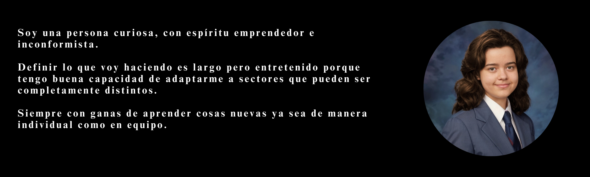
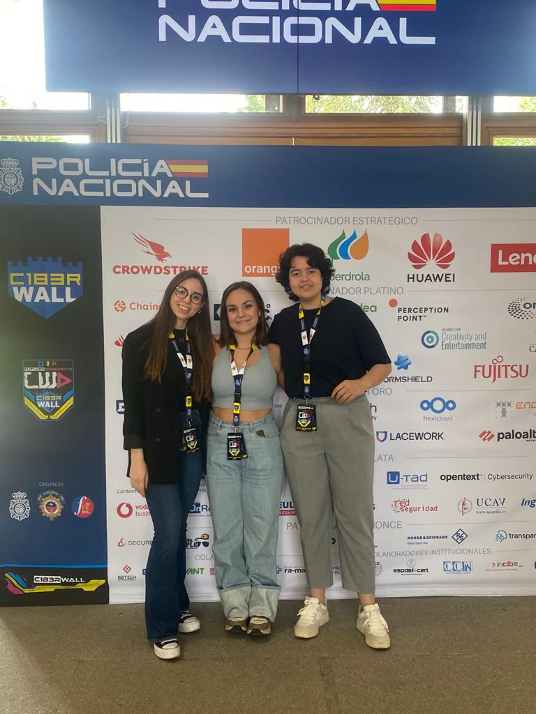
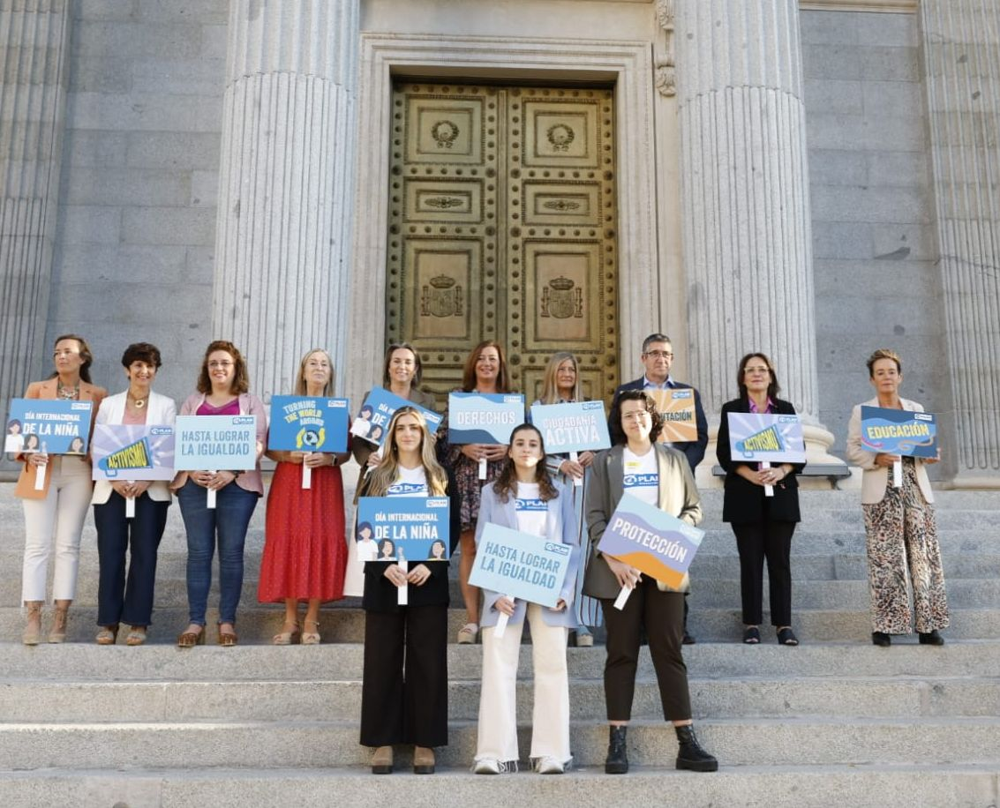

❮
❯
sudo su cat Bienvenid@
¡Bienvenido a mi página web! Aquí, en este rincón digital, encontrarás una ventana a mi trayectoria profesional y creativa. Soy Laura, una apasionada por la ciberseguridad y la inteligencia, con una firme determinación de convertirme en una experta en el campo. Mi página web es más que un simple currículum; es un escaparate de mis habilidades, proyectos y ambiciones.
Desde mis primeros pasos en el mundo de la tecnología hasta mis proyectos más recientes, cada experiencia ha sido un escalón en mi camino hacia el éxito. Estoy comprometida con el aprendizaje continuo y el desarrollo de habilidades en áreas clave como la ciberseguridad y la inteligencia.
Mi objetivo es fusionar mi pasión por la tecnología con mi deseo de contribuir a un mundo más seguro y protegido. Mis intereses van más allá de la superficie; me sumerjo en los detalles, investigo incansablemente y busco soluciones innovadoras para desafíos complejos.
Como aspirante a analista de inteligencia, estoy decidida a aprovechar mis habilidades analíticas y mi curiosidad insaciable para abordar los problemas más urgentes de nuestra era digital. Aquí en mi página web, encontrarás una muestra de mis proyectos, actividades y logros hasta la fecha, así como un vistazo a mis ambiciones futuras.
Desde la defensa hasta la detección de amenazas cibernéticas, estoy preparada para enfrentar los desafíos que se presenten en el camino hacia mis metas profesionales. Gracias por visitar y explorar mi página web. Siéntete libre de echar un vistazo, conectarte conmigo y ser parte de mi viaje hacia un futuro emocionante en la ciberseguridad y la inteligencia.
¡Juntos, podemos hacer del mundo digital un lugar más seguro y protegido!